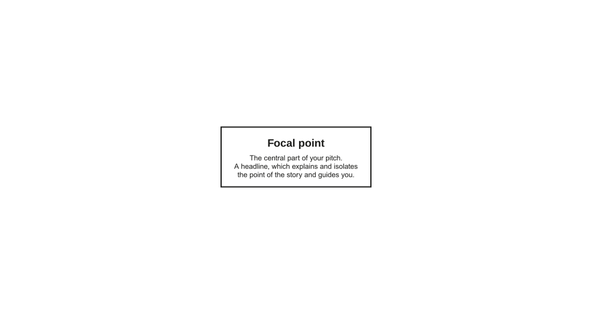
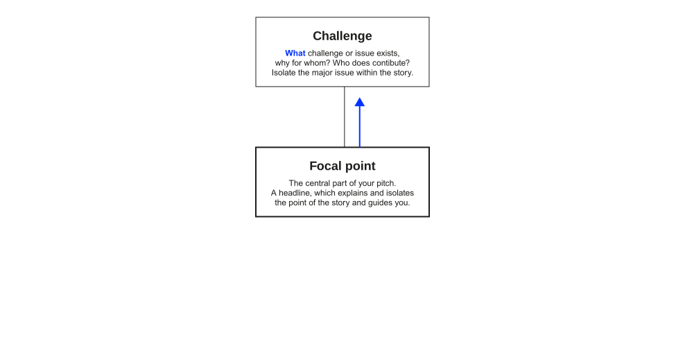
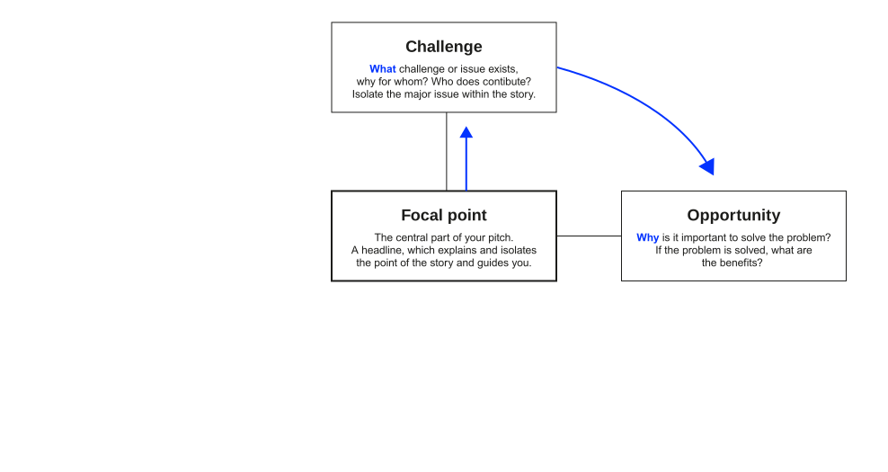
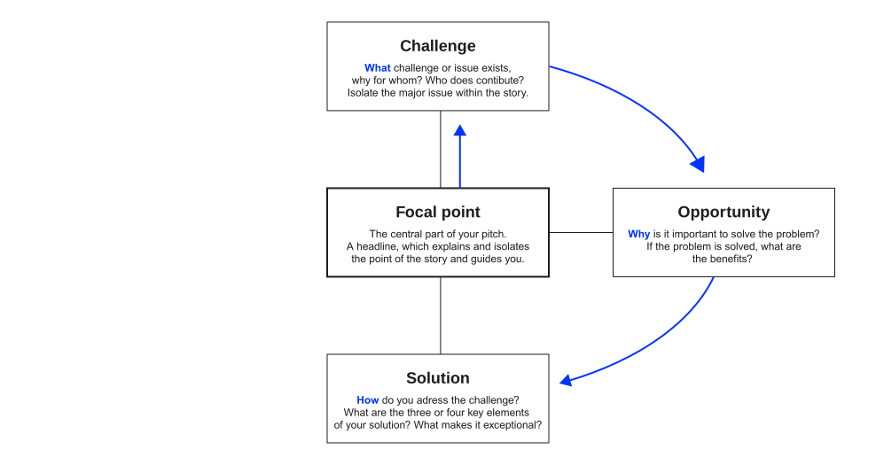
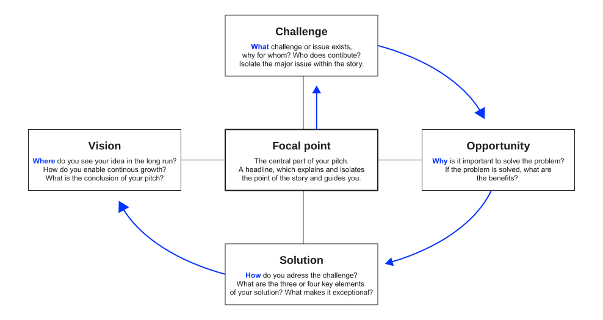

How to sell your solution convincingly?
Neu-Ulm University of Applied Sciences
May 22, 2026
After this session, you should be able to:
Great ideas are a dime a dozen. What separates the dreamers from the doers is the ability to convince others to get behind the idea. This could mean securing funding, getting buy-in from colleagues, or attracting customers.
Without that ability to sell,
your ideas are likely to stay just that: ideas.
This is your unique opportunity to present your idea to the board.
You have 12 minutes to raise the funds for the market-ready development of your solution.
The board will judge your solution along three dimensions:
You have spent weeks on the problem.
The board will spend twelve minutes on it.
Your group has investigated the challenge, talked to stakeholders, and tested ideas.
The board has not.
That gap is your central communication problem.
Problem understanding fails
Even the best solution lands in a vacuum. The board never feels the pain your solution would solve.
Solution falls short
A sharp problem framing raises expectations. A weak solution then disappoints the board twice: once for the problem, once for itself.
You have to earn the right to talk about your solution.
The price of admission is a problem framing the board recognises as their own.
Make your
problem statement
stick.
Demonstrate understanding of the stakeholders, their values, and their interests before you offer a solution.
For [stakeholder], who [situation/pain],
the challenge is [problem].
If unresolved, [consequence].
The board cares because [board’s priority].
Five short clauses; no jargon; no solutioning yet.
These are often three different people.
Lead with the first; address the second; do not forget the third.
What you know:
What the board cares about:
Connect their slice back to your depth, not the other way around.
Sharpen the problem the board will hear first.
In your project group, run three rounds:
Be ready to read your statement to the plenary at the end.
10:00
Aristotle suggested that any spoken or written communication intended to persuade contains three key rhetorical elements:
Logos
Appeals to the audience’s reason, building up logical arguments.
Ethos
Appeals to status or authority so that listeners trust the speaker.
Pathos
Appeals to the emotions, e.g., making the audience feel concerned or hopeful.
Guber (2007) argues that a story persuades when it carries four truths:
Behind every good story is a well-thought-out structure that forms its backbone. The essential elements are:
Characters
Setup or conflict
Sequence of events (plot)
Resolution





Pitch the problem; survive the board.
Pair up with another project group: A pitches, B plays the board.
Debrief in plenary (1 min per group): which question would have killed your pitch, and how will you fix it?
10:00
Show, don’t tell.
When you are selling your idea,
the audience must first buy you.
Make sure the audience trusts that you have recognised the problem correctly and can lead the solution to success.
Everything starts with an idea,
but this is only the beginning.
Present a roadmap: a plan for translating the idea into actions and results.
A defensible default split for a 12-minute pitch:
| Section | Time |
|---|---|
| Hook and problem | 3 min |
| Approach and solution | 3 min |
| Prototype demo | 3 min |
| Value, roadmap, ask | 2 min |
| Buffer | 1 min |
The main criterion is how convincing your pitch and solution are.
In addition, we look at: